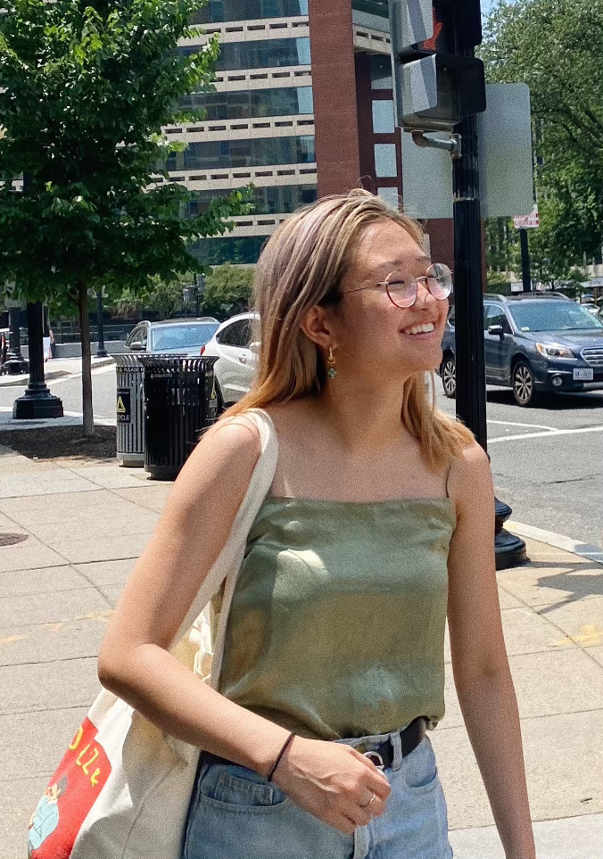

hi, i'm mira! 👋🏼
i’m a designer and developer passionate about building a
kinder, more inclusive future.
my name's mira (she/her) and i'm a designer and engineer who loves to make digital products of all shapes and sizes!
i studied computer science and cognitive science at the university of virginia. i took my first programming course in college and as someone who's always loved puzzles (sudoku, jigsaw, you name it), i was instantly hooked. i also loved my cognitive science classes and learning about the human mind and how people think, feel, and perceive. since graduating in 2020, i've been working at deloitte in both software engineer and product designer positions.
my ideal role would be one that allows me to utilize both my eye for design and technical skillset to bridge the gap between design and development and ultimately create accessible, memorable products.
most importantly, i'm passionate about social impact and working somewhere that centers community and inclusivity.
when i’m not designing or coding, i love making spotify playlists, playing musical instruments, and solving the new york times mini crossword!